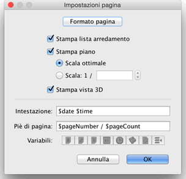

| Stampare una casa | |||
|
Per stampare una casa, scegli File > Stampa.... Per impostazione predefinita, Sweet Home 3D stampa la lista
arredamento, la piantina e l vista 3D corrente di una casa,
usando il formato di carta, i margini e l'orientamento di
default.  Nel pannello di impostazione della pagina, puoi cambiare il
formato della carte e l'orientamento cliccando sul pulsante
Formato pagina. Puoi inoltre scegliere se la lista
arredamento, la piantina e la vista 3D di una casa dovrebbero
essere stampate o meno. Se non vuoi usarela scala della piantina
elaborata automaticamente per contenerla nella pagina, puoi
scegliere un'altra scala nel campo Scala.
Per evitare errori nella scrittura del nome corretto di una variabile, usa il pulsante Variabili visualizzato sotto i campi Intestazione e Piè di pagina. Il carattere $ è riservato per le variabili, per stampare il carattere $ usa $$. Prima di stampare la tua casa, puoi vedere un'anteprima di stampa, scegliendo dal menù File > Anteprima di stampa....
Nel pannello di anteprima di stampa puoi vedere come una casa sarà stampata pagina per pagina. Per cambiare la pagina in anteprima, clicca sulle frecce sopra il pannello o premi i tasti freccia. |

|